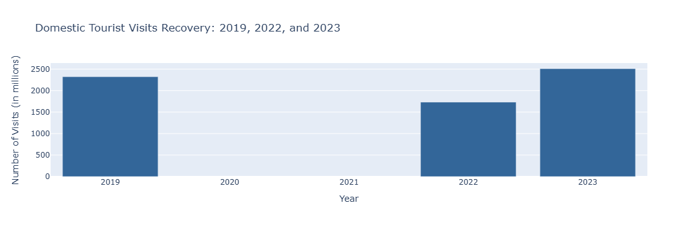
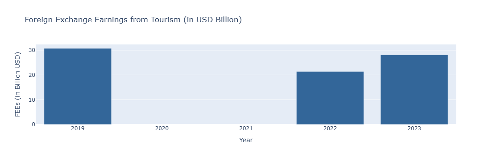
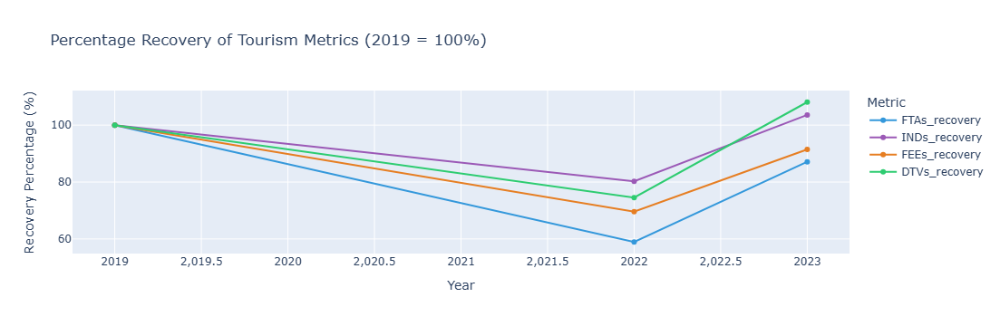
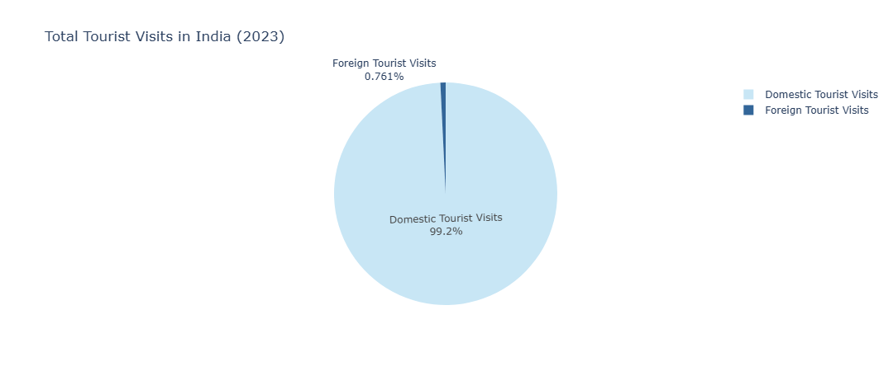
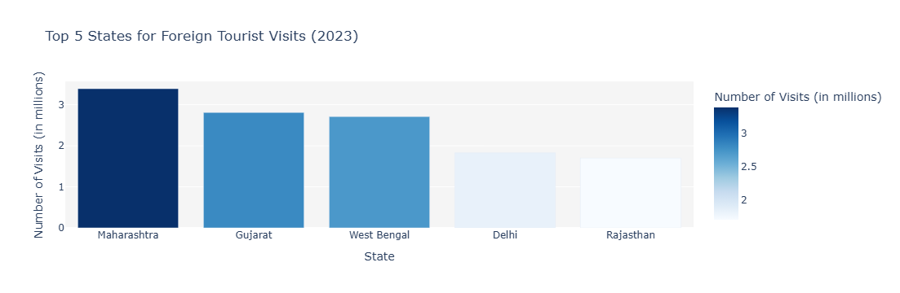

Introduction: A Journey of Resilience
This report provides a detailed analysis of India’s tourism sector, charting its path from the historic disruption of the pandemic to its powerful recovery. By examining key metrics like tourist arrivals, foreign exchange earnings, and travel patterns from 2019 to 2023, we uncover key trends that are shaping India’s travel landscape today.
Part 1: The Great Comeback
We begin by looking at the overall recovery of India's tourism sector. The plots below show how key indicators have bounced back from the significant drops seen in 2020 and 2021.
Foreign and Outbound Travel is Rebounding
The first chart compares the number of foreign tourists visiting India (FTAs) with the number of Indian citizens traveling abroad (INDs). While the volumes are on different scales, both show a clear upward trend, with outbound travel in 2023 surpassing pre-pandemic levels.
✅ Indian Nationals' Departures (INDs) recovered fully, reaching 27.88 million in 2023, slightly above the 2019 number of 26.92 million.
✅ Foreign Tourist Arrivals (FTAs) showed a strong rebound, reaching 9.52 million in 2023, a remarkable recovery from the 2021 low.
Domestic Tourism is the Powerhouse
The next chart reveals an even more impressive story: the explosive growth of domestic tourism. While international travel was restricted, Indians explored their own country, and this trend has continued to grow dramatically.
✅ Domestic Tourist Visits (DTVs) saw a massive surge, reaching 2,509.63 million in 2023, far exceeding the 2019 level of 2,321.98 million.
Foreign Exchange Earnings are Back on Track
Finally, we look at the financial side of the recovery. This plot shows that the foreign exchange earnings from tourism have also made a strong comeback.
✅ Foreign Exchange Earnings (FEEs) reached $28.08 billion in 2023, showing a strong recovery from the pandemic low and are approaching the 2019 figure of $30.7 billion.
The Big Picture: A Snapshot of Recovery
This final line chart in the recovery section provides a summary of the recovery trajectory for all key metrics, with 2019 serving as the 100% benchmark. It clearly visualizes the speed and extent of the recovery for each segment of the tourism industry.
Part 2: Who is Visiting India?
With a clear understanding of the recovery, let’s explore the profile of the inbound tourist in 2023. What are their motivations, demographics and travel preferences?
Purpose of Visit: Leisure and Diaspora Lead the Way
This pie chart reveals the primary reasons why foreign tourists traveled to India in 2023. The data highlights a diverse set of motivations.
✅ Leisure and Holiday is the top reason for visits, making up nearly half of all arrivals.
✅ Indian Diaspora visits represent a significant portion, reflecting strong personal and family connections among overseas Indians.
✅ Medical tourism also stands out, accounting for 6.9% of all visits, underscoring India's growing reputation as a healthcare destination.
Age & Gender: A Balanced Demographic
The charts below provide a snapshot of the age and gender distribution of foreign tourists. We can see that India attracts a broad demographic, with a slightly male-dominant but overall balanced gender split.

✅ The largest group of visitors is between 35-44 years old (21.2%), followed closely by the 45-54 age group (20.1%).
✅ The gender distribution is 57.7% Male and 42.3% Female, showing a balanced appeal.
How Do They Travel?
The mode of travel is clearly dominated by air transport, reflecting the long distances for many international visitors.

✅ A vast majority of FTAs, 79.4%, arrived by air. However, a significant portion, 20.1%, entered via land routes, largely comprising tourists from neighboring countries like Bangladesh and Pakistan.
Part 3: The Domestic Powerhouse & Monumental Appeal
This final section highlights the incredible scale of domestic tourism and provides an interesting look at where both local and international visitors choose to go.
Domestic vs. Foreign Visits: A Tale of Two Scales
This plot immediately reveals the immense size of the domestic tourism market. Domestic visits dwarf foreign visits, indicating the importance of local travelers to India's tourism economy.
✅ Domestic Tourist Visits (DTVs) accounted for an astounding 2.5 billion visits, while Foreign Tourist Visits (FTVs) stood at 19.25 million. The domestic market is the undisputed driver of tourism volume in India.
Top Destinations: Different Strokes for Different Folks
While some states attract both domestic and foreign tourists, the top-ranked destinations show a clear difference in preferences. The next two charts show which states are leading in each category.
✅ For domestic visitors, Uttar Pradesh leads by a huge margin, followed by other states with strong religious and cultural sites like Tamil Nadu and Karnataka.
✅ Foreign tourists tend to favor states with major international hubs and a rich blend of history and culture, such as Maharashtra, Gujarat and West Bengal.
The Monumental Draw
This final plot is one of the most interesting. It compares the number of domestic and foreign visitors to India's most iconic monuments. It challenges the common perception that these sites are primarily for international tourists.
✅ The Taj Mahal remains the top draw for both foreign and domestic visitors.
✅ However, monuments like the Sun Temple in Konark and Qutub Minar attract significantly more domestic visitors than foreign ones, reinforcing the idea that India's heritage is a major attraction for its own citizens.
📌 Final Insights and Conclusion
The analysis of India's tourism data from 2019-2023 reveals a story of powerful recovery and shifting dynamics:
- Full Recovery for Domestic & Outbound Travel: Domestic tourism has not only recovered but has grown significantly beyond pre-pandemic levels. Indian nationals' outbound travel has also fully rebounded.
- Strong Inbound Recovery: Foreign Tourist Arrivals and Foreign Exchange Earnings show a robust recovery and are on a solid path to surpass 2019 levels.
- A Diversified Inbound Profile: Visitors are motivated by a mix of leisure, family ties and medical needs, with a balanced age and gender profile.
- The Domestic Market is the Foundation: The sheer volume of domestic tourist visits highlights its role as the backbone of the industry, with different states and monuments attracting distinct visitor types.
This data confirms that India's tourism sector is not just surviving but thriving, driven by both a resilient international market and a powerful domestic one. These insights are invaluable for stakeholders looking to understand and capitalize on current trends in the travel and tourism industry.